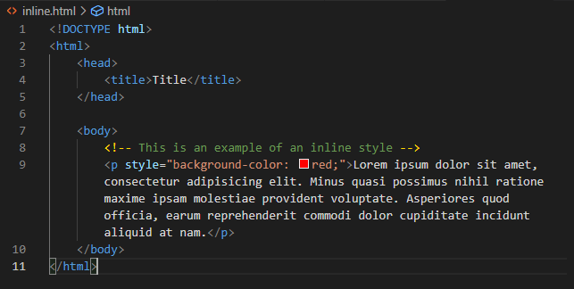
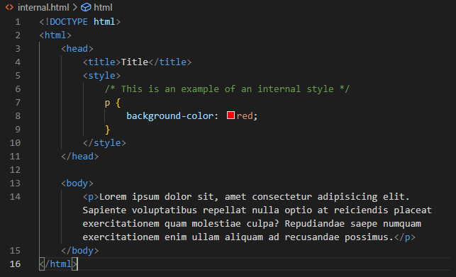
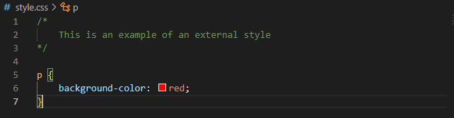
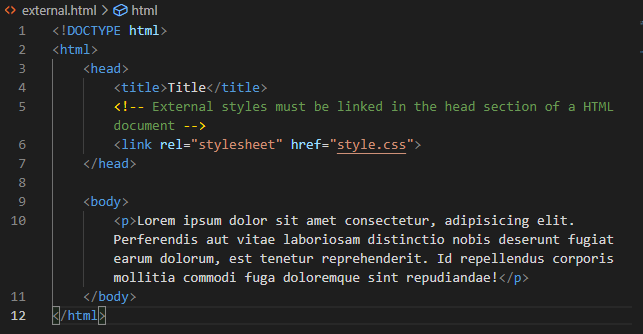

Table of contents
About CSS: What is CSS?
Cascading Style Sheets (CSS) is a rule-based language used to describe how HTML content will be formatted and displayed in a web page. This allows web developers to make appealing graphics and styles for webpages.
Advantages of CSS
CSS is powerful as it allows web developers to style boring black and white pages of text to a webpage that is more pleasing to read for the users.
CSS provides flexibility in how content can be displayed which every way you want and in all forms of device and screen form factors.
CSS can be used to efficiently style many pages with only one CSS file, this frees up time for the web developer when designing websites and provides better performance as the browser can cache the CSS file rather than loading a new style for each webpage.
Example of CSS styling
Without CSS
When you first write your website, this is probably what it would look like at first without CSS. You probably wouldn't want your website to look plain and boring to read, well neither does anyone else.
With CSS
After you have written your website, you can add CSS to make it look nicer and easier to read, now you can publish your website to your family, friends and more!
CSS Structure

Inline Style
Inline CSS are specified within the style attribute of a html tag and only styles the content within the tag.
Inline styles are only used rarely when you need a style for a unique tag e.g. a special style for a word in the middle of a paragraph.
Internal Style
Internal CSS are specified within the HTML document within the <style> tag in the <head> and only styles the content within the single HTML document.
Internal styles are used for when there is a unique style just for one webpage.
 External Style
External CSS are specified in a separate .css file which is linked through the <link> tag in the HTML document and it can style multiple HTML documents that link to it.
External styles is the recommended form of writing styles for a whole website. E.g. if you change the colour of your navbar or accent colour you only need to edit one value
CSS Syntax
CSS must follow a syntax shown below in order to work. it consists of a selector, declarations and within that, the property and value.
Declaration
↓ ↓
p {color: red; font-size: 16px}
↑ ↑ ↑
selectors property value
The selector specifies what HTML element will it style.
The declaration contains a property and value. The declaration is used to specify what style should be applied.
CSS Selectors
CSS selectors are used to specify what HTML element will be styled. Selectors come before the declaration. CSS selectors can be put into 5 categories:
- Simple selectors - selects elements on tag name, id or class
- Combinator selectors - selects elements based on a specific relationship between them
- Pseudo-class selectors - selects elements based on their state
- Pseudo-elements selectors - selects and styles a part of an element
- Attribute selectors - selects elements based on an attribute or attribute value
CSS Examples
I have written 20 examples of different CSS properties in codepen.io. You can find more of my CodePens by clicking here